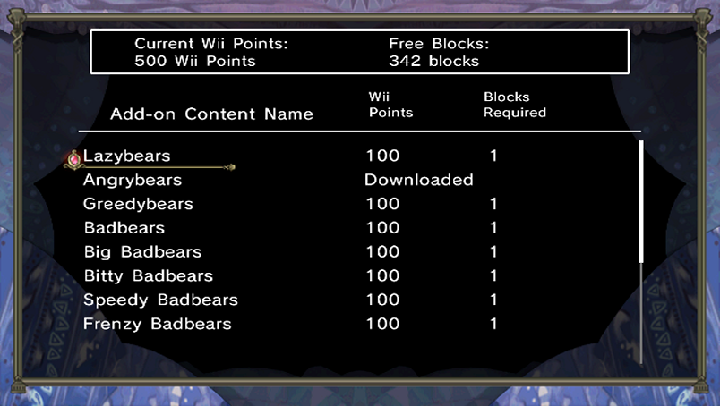

16 |
Contenido adicional |
 |
|

Necesitarás Wii Points para comprar contenido adicional.
Paquete de capítulos extra
・Hidden Tome, Vol. 1 (Libro escondido, Vol. 1) (300 puntos / bloques necesarios: 2)
・Hidden Tome, Vol. 2 (Libro escondido, Vol. 1) (300 puntos / bloques necesarios: 2)
Unidades extra
・Osos perezosos (100 puntos / bloques necesarios: 2)
・Osos enojosos (100 puntos / bloques necesarios: 2)
・Osos codiciosos (100 puntos / bloques necesarios: 2)
・Osos malosos (100 puntos / bloques necesarios: 2)
・Súper osos malosos (100 puntos / bloques necesarios: 2)
・Miniosos malosos (100 puntos / bloques necesarios: 2)
・Osos malosos presurosos (100 puntos / bloques necesarios: 2)
・Osos malosos furiosos (100 puntos / bloques necesarios: 2)
・Espíritus de fuego (100 puntos / bloques necesarios: 2)
・Súper espíritus de fuego (100 puntos / bloques necesarios: 2)
・Espíritus de agua (100 puntos / bloques necesarios: 2)
・Súper espíritus de agua (100 puntos / bloques necesarios: 2)
・Trol titánico (200 puntos / bloques necesarios: 2)
Atención: debes adquirir "The Tales of Bearsworth Manor: Chaotic Conflicts" para poder usar este contenido adicional.
Debe haber suficiente espacio libre en la memoria de la consola Wii. Para obtener espacio libre, transfiere datos a una tarjeta SD o borra datos en la pantalla de gestión de datos de la consola Wii. |
 |
 |